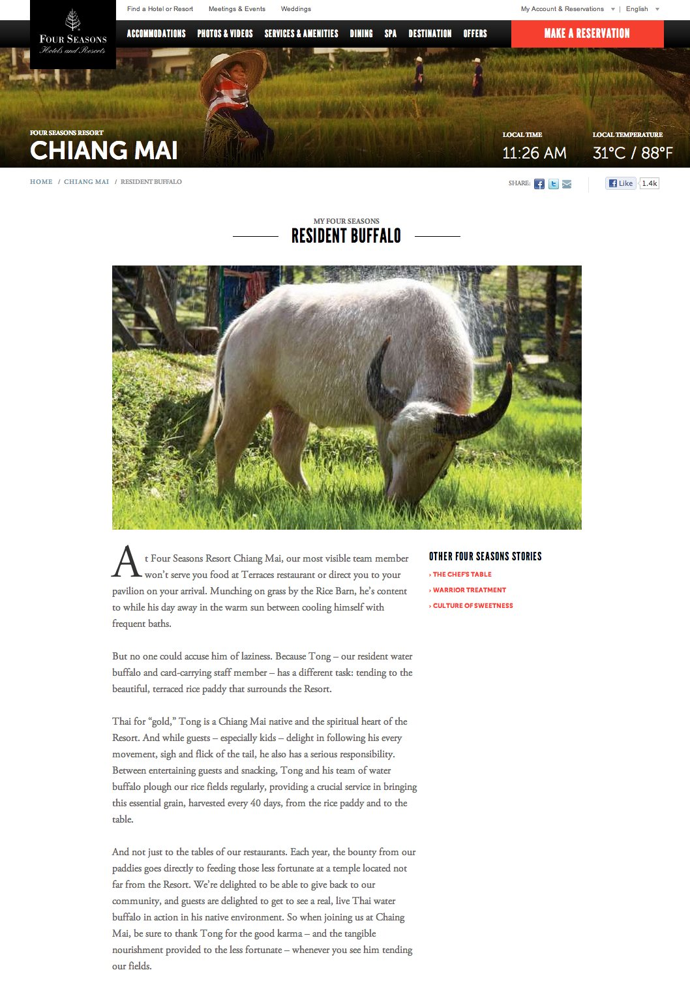
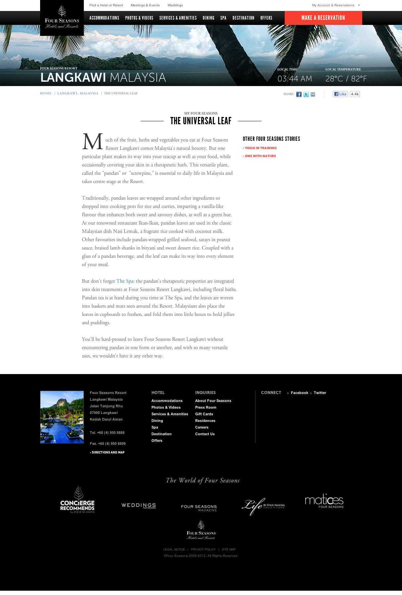

Four Seasons:
36 countries,
one voice.
Four Seasons Hotels & Resorts / Huge · 2010–2013

The Challenge
Four Seasons was rebuilding its digital presence from the ground up. The problem with being the world's most recognized luxury hotel brand is that everyone already thinks they know what you are — which means the writing tends to default to boilerplate: marble lobbies, impeccable service, the finest in blah blah blah.
What Four Seasons actually had, at every single one of its global properties, was something more interesting: a genuinely specific identity. Local quirks. Idiosyncratic employees. Hidden stories that no press release would ever think to tell. The brief was to find those stories and put them on the site — turning each property page from a brochure into something people might actually want to read.
My Role
- Reporter & writer
- Editorial strategy
- Content framework for global scale
Scope
- Virtually every Four Seasons property worldwide
- 36+ countries
- Long-form original stories per property
Agency
- Huge
The Method
I approached it like a journalist — because I was one, before I was a copywriter. I interviewed hotel managers, chefs, concierges, and groundskeepers. I asked about the things that didn't make it into the standard property description: the resident animals, the staff members who'd been there for 40 years, the hyperlocal ingredients that showed up in the restaurant, the architectural detail that most guests walked past without looking up.
The stories I wrote weren't travel copy. They were reported pieces — with real sources, real details, and the kind of specificity that only comes from actually talking to the people who live inside a place. Each one was designed to make a reader feel like they were getting something the guidebook didn't have.
Tong, Resident Buffalo — Four Seasons Chiang Mai
The most visible team member at Four Seasons Resort Chiang Mai won't serve you food at Terraces restaurant or direct you to your pavilion on your arrival. He's content to while his day away in the warm sun — munching on grass by the Rice Barn, cooling himself with frequent baths. Because Tong, a Thai water buffalo and card-carrying staff member, has a different task: tending to the beautiful, terraced rice paddy that surrounds the Resort.
One story, among dozens written across properties on every continent. Each one reported, written, and specific to its place.


The Strategy Part
Writing the stories was one job. The other was building the editorial framework that would let Four Seasons keep doing it after I was gone — a content strategy that defined what made a good property story, how to find it, how to structure it, and how to maintain a consistent voice across a global team working in dozens of languages and markets.
That's the part that scaled. The stories I wrote were the proof of concept; the strategy was the thing that lasted.


Why Journalism Makes Better Brand Writing
Most luxury copywriting describes things. It tells you the lobby has high ceilings and the spa uses locally sourced botanicals. It's accurate and completely forgettable, because describing things is the lowest form of writing about them.
Reporting — the habit of actually asking questions, finding the specific detail, and building a story around something real — produces writing that's harder to ignore. The buffalo story works not because it's charming (though it is) but because it's true, and specific, and unexpected, and it tells you something about what it would feel like to actually be at that property that no room description ever could.
That instinct — find the real story, then tell it — is what I brought from New York Press to Huge to every brand I've worked on since.
Gold Award, Website Design — International Design Awards (IDA)